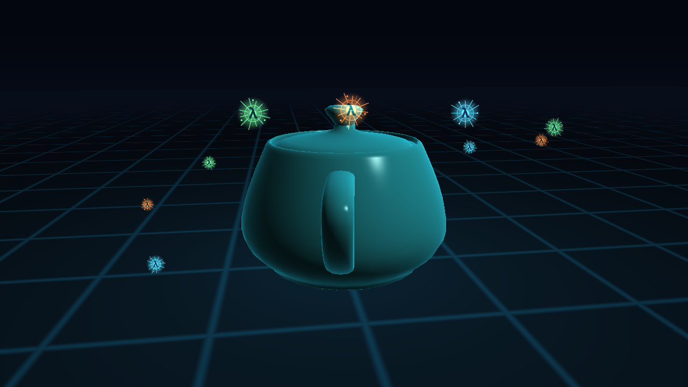

精灵图与 HD 3D 场景
本节目标：把一张 4×4 的精灵图（sprite sheet）加载进来，用帧号算出这一帧在图集里的 UV，再把精灵做成 billboard 放进一个 1280×720 的 3D 场景。场景里有渐变天空、程序化网格地面、Utah Teapot，以及 12 个叠加发光的 λ 符印。跑起来应该看到茶壶缓慢旋转，周围一圈彩色光符一边绕行一边播放 16 帧动画。
计算位置精灵图 PNG 的读取、上传、场景矩阵和相机在 CPU；图集 UV、纹理采样、billboard 变换、加法混合在 GPU。数据流：PNG → CPU 字节 → texture → 片元 UV 采样 → 加法混合 → 屏幕。

15.1 精灵图是什么
精灵图（sprite sheet，也叫 texture atlas）把动画的每一帧排进同一张图。本课的图是 4 列 × 4 行、每帧 256×256、总共 16 帧：
+------+------+------+------+
| 0 | 1 | 2 | 3 | ← 帧 0 在左上角
+------+------+------+------+
| 4 | 5 | 6 | 7 |
+------+------+------+------+
| 8 | 9 | 10 | 11 |
+------+------+------+------+
| 12 | 13 | 14 | 15 |
+------+------+------+------+为什么不用 16 张单独的 PNG？因为一张图集只要一次 gl-bind-texture 就能画完所有帧，draw call 也更容易合批。代价是采样时要自己把局部 UV 0..1 映射到某一格的 UV 范围。
| 概念 | 本课的值 | 说明 |
|---|---|---|
| 图集尺寸 | 1024×1024 | 整张 PNG 的像素尺寸 |
| 网格 | 4 列 × 4 行 | cols / rows |
| 单帧尺寸 | 256×256 | 图集尺寸 ÷ 网格 |
| 帧数 | 16 | cols × rows |
| 帧号 | 0..15 | 从左上角开始、按行优先 |
图集本身也是 CPU 用 racket/draw 画出来的：assets/sprites/make-sprites.rkt 生成一个透明的 λ 符印，射线旋转、核心呼吸、外圈脉冲。想改颜色或帧数，直接改它再重跑。
15.2 加载精灵图
加载流程和普通纹理一样，只是最后多记住“网格是几列几行”。代码收在 lib/sprite-sheet.rkt：
(define bmp (read-bitmap path))
(define w (send bmp get-width))
(define h (send bmp get-height))
(define argb (make-bytes (* w h 4)))
(send bmp get-argb-pixels 0 0 w h argb)
(define rgba (flip-rows (argb->rgba argb w h) w h))
(set! id (texture-new))
(gl-bind-texture gl-texture-2d id)
(gl-pixel-store-i gl-unpack-alignment 1)
(gl-tex-parameter-i gl-texture-2d gl-texture-wrap-s gl-clamp-to-edge)
(gl-tex-parameter-i gl-texture-2d gl-texture-wrap-t gl-clamp-to-edge)
(gl-tex-parameter-i gl-texture-2d gl-texture-min-filter gl-linear)
(gl-tex-parameter-i gl-texture-2d gl-texture-mag-filter gl-linear)
(gl-tex-image-2d gl-texture-2d 0 gl-rgba w h 0
gl-rgba gl-unsigned-byte rgba)三个细节：
- 字节序：
get-argb-pixels给的是 A,R,G,B，而gl-tex-image-2d要 R,G,B,A，所以先重排。 - 行序：位图的
(0,0)在左上角，OpenGL 纹理的(0,0)在左下角，所以默认把行倒过来。下一节的“行号翻转”就是这个决定的另一半。 - 不生成 mipmap：图集里相邻帧挨得很近，mipmap 会把隔壁帧混进来，边缘出现“串帧”。精灵通常离相机不远，线性过滤就够。
加载完得到的是一个 sprite-sheet 结构：纹理 id、整图宽高、列数行数、单帧宽高，以及 frame-count。本节后面的代码只用到其中的 id、列数、行数和帧数。
15.3 帧号 → UV
顶点上的 UV 是单帧内部的 0..1。片元要先把它挪到某一格的范围内。设帧号 f、列数 C、行数 R：
col = f mod C
rowTop = floor(f / C) ; 从 PNG 顶部往下数
row = R - 1 - rowTop ; GL 的 v=0 在底部，所以翻过来
uv = (vec2(col, row) + v_uv) / vec2(C, R)把它写进片元着色器，就是本课最核心的几行：
(uniform float u-frame) ; 0..15
(uniform float u-cols) ; 4
(uniform float u-rows) ; 4
(float col (mod u-frame u-cols))
(float row-top (floor (/ u-frame u-cols)))
(float row (- u-rows 1.0 row-top))
(vec-2 cell (vec-2 (/ 1.0 u-cols) (/ 1.0 u-rows)))
(vec-2 uv (* (vec-2 (+ col (x v-uv)) (+ row (y v-uv))) cell))
(vec-4 tex (texture u-atlas uv))如果忘了 row = R - 1 - rowTop，动画会从下往上倒着播，而且每一帧上下颠倒。这个坑和 04 课“真实图片要不要翻行序”是同一个问题，只是这里翻的是行号，不是像素行。
关键点精灵动画不需要每帧换纹理，也不需要重新上传像素；只改一个 u-frame uniform，采样位置就换了。16 帧共用一张纹理、一个 VAO、一个 draw call 模板。
15.4 把精灵放进 3D：billboard
精灵是一个单位四边形（局部 XY 平面）。如果直接给它一个普通 model 矩阵，它会跟着物体转，转到侧面就看不见了。3D 场景里的精灵通常用 billboard：四边形永远面向相机。
做法是从相机取三个基向量：
forward = normalize(target - eye)
right = normalize(cross(forward, worldUp))
up = cross(right, forward)
normal = cross(right, up) ; 指向相机然后把 right / up / normal 乘上尺寸，写进 model 矩阵的三列，最后一列放精灵的世界位置：
(define model
(mat-4 (vec-4 (* (vx right) size) (* (vy right) size) (* (vz right) size) 0.0)
(vec-4 (* (vx up) size) (* (vy up) size) (* (vz up) size) 0.0)
(vec-4 (vx normal) (vy normal) (vz normal) 0.0)
(vec-4 (vx center) (vy center) (vz center) 1.0)))顶点着色器仍然是普通的 proj · view · model · pos。所以 billboard 没有新公式，只是 model 矩阵的基向量换了：不再用物体的局部轴，而是用相机的屏幕轴。
15.5 HD 场景：分辨率、MSAA 和混合
“HD”在本课不只是把窗口开大，而是四件事一起做：
| 做法 | 本课的值 | 作用 |
|---|---|---|
| 窗口分辨率 | 1280×720 | 720p，画面和字体更细 |
| MSAA | #:multisample 4 | 4× 多重采样，压掉网格和精灵边缘的锯齿 |
| 精灵图分辨率 | 1024×1024（单帧 256） | 放大到屏幕上也够清晰 |
| 过滤 | gl-linear | 精灵缩放时平滑取像素 |
make-window 新增了可选的 #:multisample，默认 0，不影响前面的课；本课传 4。lib/window.rkt 里只是把它交给 gl-config% 的 set-multisample-size。
场景由四层组成，绘制顺序很重要：
| 顺序 | 画什么 | 深度 | 混合 |
|---|---|---|---|
| 1 | 渐变天空（全屏四边形） | 测试关、写入关 | 无 |
| 2 | 网格地面 | 测试开、写入开 | 无 |
| 3 | 茶壶（Phong + 边缘光） | 测试开、写入开 | 无 |
| 4 | 精灵 billboard | 测试开、写入关 | 加法混合 |
精灵的混合方式是：
(gl-enable gl-blend)
(gl-blend-func gl-src-alpha gl-one) ; 加法混合：光叠加，不会把背景压暗
(gl-depth-mask #f) ; 精灵不写深度，避免透明边缘互相遮挡gl-src-alpha / gl-one 的结果是 src.rgb * src.a + dst.rgb：精灵的亮部直接加到背景上，看起来像发光。透明区域 src.a = 0，加了个零，不会留下黑框。深度测试仍然开着，所以茶壶会正确挡住它后面的精灵；深度写入关掉，精灵之间不会互相切出硬边。
天空是一个全屏四边形，顶点直接输出 NDC 坐标，片元按 v-uv.y 混合上下两种颜色，再在地平线附近加一点辉光。地面是一个 120×120 的四边形，片元用世界坐标 p.xz 的 fract 画网格，并让远处淡出到天空色，避免地面边缘出现一条硬线。
关键点HD 场景不是靠某一个“高级 API”，而是把已经学过的几件事叠起来：高分辨率窗口 + MSAA、正确的深度和混合顺序、图集 UV、billboard 矩阵、以及程序化天空/地面。每一项都在前面章节出现过，这一课只是把它们组合成一个完整画面。
完整代码
15-sprite-atlas/sprite-atlas.rkt，本课全部代码（直接 racket 跑）。精灵图是 assets/sprites/racket-sigil.png，加载器是 lib/sprite-sheet.rkt。

试试看
- 把
sprite-cols/sprite-rows改成2/2，再换一张 2×2 的图：帧数、UV 格子、动画都会跟着变。注意sprite-sheet-frame-count也会变成 4。 - 把
gl-blend-func改成gl-src-alpha/gl-one-minus-src-alpha：精灵从“发光”变成普通透明贴纸，颜色会暗很多。 - 把
gl-depth-mask #f改成#t：精灵开始写深度，多个精灵前后重叠时会互相遮挡，光环前后关系变硬。 - 把
sprite-count从 12 改成 32：draw call 变多，但纹理只绑定一次——正好对比“多张单独 PNG”和“一张图集”的成本。 - 把
#:multisample 4改成0：地面网格和精灵边缘会出现锯齿，能直观看到 MSAA 在做什么。 - 把
u-frame的计算改成(modulo (- (inexact->exact (floor (* t 12.0))) (* i 3)) ...)：动画方向反过来，验证帧号确实只是一个普通 uniform。
GPU 资源本节创建的 program / VAO / VBO（以及纹理）都在文件末尾的 shutdown 里用 program-delete / vertex-array-delete / buffer-delete 显式删除，由 #:on-close shutdown 在关窗时触发。为什么这些句柄 GC 管不了、为什么必须手动删，见 02 · 2.9。
小结
| 概念 | 一句话 |
|---|---|
| 精灵图 / 图集 | 多帧排在同一张纹理里，一次绑定、一次 draw call 模板就能画很多精灵 |
| 图集 UV | uv = (vec2(col,row) + 局部UV) / vec2(cols,rows)；PNG 顶行到 GL 底行要翻 row |
| 动画 | 只改 u-frame，不换纹理、不重传像素 |
| billboard | model 矩阵用相机的 right / up / normal 做基向量，四边形永远面向相机 |
| 加法混合 | gl-src-alpha / gl-one 把精灵亮部加到背景上，做出发光效果 |
| HD 场景 | 1280×720 + 4× MSAA + 高分辨率图集 + 正确深度/混合顺序 |
复习复习 01 · API 与数据流。精灵图这一课把“传数据 / 设状态 / 启动计算”又走了一遍：PNG 是数据，UV/混合/深度是状态，gl-draw-elements 启动计算。